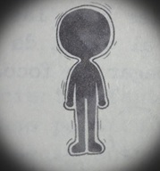

En todos lados hemos escuchado historias de fantasmas. El que está rondando en la actualidad, es el de las niñas fantasmas: seres espectrales de edad indeterminada, pero jamás con una apariencias de más de diez y once años.
Tu sabías que las niñas fantas no se aparecen en casas o departamentos, ni mucho menos en viejos castillos mansiones en ruina, sino en edificios públicos: oficinas, por ejemplo. La gente que trabaja ahí cuenta que escuchan casas acerca del tema.
Cuenta el velador del edificio;
“En mi primer día en el turno de la noche", “Estaba haciendo ronda en un piso vacío y ahí estaba la niña, al fondo del pasillo".
Cuenta una secretaria;
“Me quedé hasta tarde trabajando de pronto oí un ruido y la tenía como a un metro y medio de distancia justo más allá de donde llegaba la luz “¡Que susto!"
Recurrentemente estás historias rondan por el edificio.
La finalidad de los niñas fantasmas siguen las costumbres a lo largo de la historia por los seres humanos: acecha, o por lo menos se dejan ver en sitios vacíos o un poco frecuentado en horas muy escasa de circulación
La pregunta que surge entre la gente es
¿Por qué siempre son niñas?
¿Y por qué siempre aparecen, precisamente, en lugares como esos?
PODERES DE LOS FANTASMAS
Se sabe que los fantasmas pueden manifestar diferentes poderes sobrenaturales, sin importar su edad (antes o después de la muerte), estos poderes varían de un fantasma a otro, tienen diferentes intensidades, e incluso pueden desactivarse temporalmente en ciertas circunstancias.
Los poderes más comunes de los fantasmas son los siguientes, ordenados del más al menos frecuente:
1. Intangibilidad: el cuerpo espectral de un fantasma atraviesa la materia ordinaria, incluyendo objetos sólidos, como paredes.

2. Aparecer y desaparición: la materia espectral es invisible en un estado normal, pero los fantasmas pueden hacerse visible a voluntad, con lo que da la impresión de aparecer y desaparecer súbitamente.

3. Vuelo: esta habilidad se presenta en diferentes grados, desde el flotar a poco centímetros del suelo ( típico de algunos fantasmas famosos) hasta elevarse centenares o miles de metros y desplazarse a velocidades semejantes a las de las aves.

4. Ectoplasma: ciertos fantasmas pueden generar esta clase particular de materia espectral, de aspecto entre líquido y gaseoso, en ocasiones brillante, haciéndola “brotar" de un punto determinado.

5. Cambio de forma: esto es la modificación a voluntad del aspecto del cuerpo espectral. Un fantasma con esta habilidad puede tomar un aspecto leve o totalmente distinto de habitual -incluyendo formas ridículas o espantosas-, aumentar o reducir su tamaño aparente, etcétera.

6. manipulación de aparatos eléctricos o electrónicos: aún si no pueden tocar los controles de los aparatos, los fantasmas con esta habilidad pueden controlar las corrientes y señales eléctricas de los mismos, con lo cual pueden lograr efectos visibles para las personas vivas, cómo cambiar el canal de un televisor o encender y apagar un foco.

7. Manipulación de materia: llamada telequinesis, consiste en la capacidad de mover uno o varios objetos como si el fantasma tuviera aún un cuerpo vivo hecho de materia ordinaria. (El fenómeno conocido como poltergeist es el uso de este poder de forma caótica o violenta.)

8. Posesión: algunos fantasmas pueden “penetrar" en un cuerpo vivo y controlar sus movimientos, hacerlo hablar, etcétera. Esto no es daña el cuerpo ni al fantasma, aunque el cuerpo (en especial si es de un ser humano) suele perder la conciencia y no conservar recuerdos del tiempo de la posesión.

9. Clarividencia: aunque son muy raros, se ha registrado casos de fantasmas capaces de “ver" detalles del pasado o el futuro de sí mismos, tu entorno o ciertos seres humanos.

Los primeros tres poderes se encuentran en todos los fantasmas, y muchos pasta fastasmólogos las consideran, más bien, parte fundamental para hacer un fantasma ( o, en ocasiones, defectos, más que cualidades deseables).
FUENTES DE PODER DE LOS FANTASMAS
De acuerdo al artículo poderes de los fantasmas, todos ellos poseen poderes sobrenaturales, los cuales pueden activar o incrementar, cuando están cerca de las siguientes fuentes de poder:
1. El lugar donde sucedió su muerte física del fantasma (en especial si se trata de un lugar con poca circulación.
2. Aquellos lugares donde se realizan experimentos con frecuencia, y en gran número, emociones fuertes.
3. Marcas mágicas - como conjuros, maleficios o encantamientos- en paredes, techos y suelo.
4. Cementerio o sitios semejantes.
Adicional
5. Todo aquello lugar que genere miedo.
Una fuente adicional de poder que no depende de la distancia es la comunicación verbal entre un fantasma y una persona viva que le tenga afecto. Si el afecto tuvo su origen antes de la muerte del fantasma, la carga de poder es mayor.
Algunas investigaciones sugieren que también podría darse un incremento de poder cuando un fantasma recuerda el afecto de una persona viva, o viceversa.